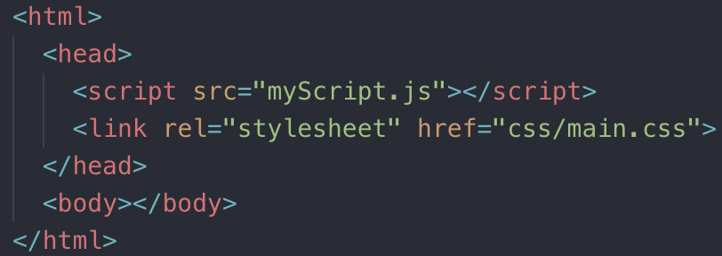
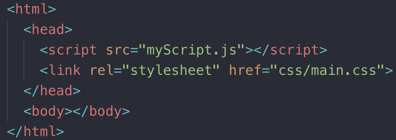

Start from Scratch

Alternatively, have your JS and CSS in external files:
HTML/CSS/JS At-a-Glance
Start from Scratch
Alternatively, have your JS and CSS in external files:
Script in Head vs Body
When the browser encounters the script tag, it will block progress on parsing the rest of the HTML on the page as it downloads (if external) the script file and executes it.
In the past, this meant putting script tags at the bottom of the body.
The modern approach is to use async or defer.
While the browser is downloading the script, it is also continuing to parse the HTML. It will execute the script as soon as it is done downloading.
Keep in mind, async scripts are not guarenteed to run in a specific order, and you should not use document.write. Instead, add event listeners:


The browser will download and execute the scripts in order after the document has been loaded.
What makes a website slow?
Cache? Promises? Memoization? Closure?
Created two internal-facing websites for the IBM Client Vantage team. This involved designing low-fidelity prototypes and mockups and engineering their front-end layout and configuration. The sites are hosted on IBM Cloud (formerly IBM Bluemix) through Cloud Foundry, using a continuous delivery toolchain integrated with Github.
2019 Lily Peng